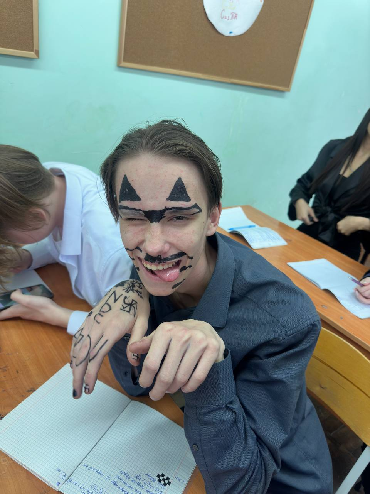
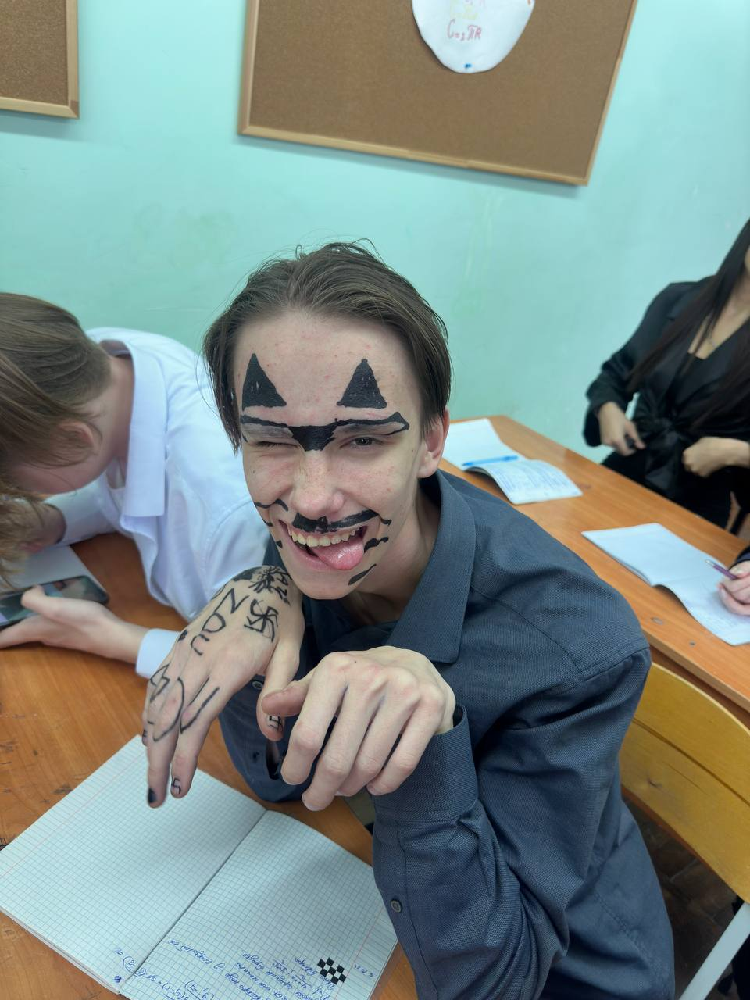

Введение
Намаз — это один из пяти столпов Ислама, и его правильное выполнение очень важно для каждого мусульманина. В этом разделе мы рассмотрим, как правильно совершать намаз, основываясь на учении Пророка Мухаммада (ﷺ).
Основные этапы намаза
Намаз состоит из нескольких этапов, каждый из которых имеет свои правила и особенности.
- Такбир: Произнесение "Аллаху Акбар" в начале намаза.
- Кыям: Стояние в намазе и чтение сур из Корана.
- Руку: Поясной поклон.
- Суджуд: Земной поклон.
- Ташаххуд: Сегодня я обосрался на лекции. Нет, блять, это не паста. Суть такова - вчера выпил алкогольной дряни, а я как выпью - у меня всегда понос на утро. Ну, сегодня встал, поссал задницей, как водится, и пошёл в универ. И вот сижу я на паре, немного пучит живот. Тут чувствую - надо пустить шептуна. Надо сказать, что нет большего удовольствия, чем бесшумно пёрнуть в общественном месте. Люди морщатся, подозрительно косятся друг на друга и даже не подозревают, что источник вони - интеллигентного вида юноша с модным красным шарфиком на шее...Так о чём я... А, ну да. Сел поудобней, потихоньку раздвинул ягодицы, чтоб бесшумно было и... Но вместо газов я почувствовал жидкое говно, которое тепло по прямой кишке. Почувствовав пиздец, я резко сжал жопу, остановив процесс, но немного всё же вылилось на трусы. Не особо меня это напрягло, пара была последняя, до дома близко. Продолжил писать лекцию. Но через 5 минут, говно застрявшее у сфинктера дало о себе знать. Да ещё новое подобралось. Таких болей в животе я давно не испытывал. Было понятно, что до дома не добегу. Оставался сортир в универе - зассаный пиздец с 12 толчками, который раз в день чистит какая-то бабка. Блять, меня это всегда удивляло. Вроде университет, храм, сука, науки, а грязь как в привокзальном сортире. В общем, ужасный вариант, но выбора у меня как бы не оставалось. Отпросился у препода, минуть пять, зажав задницу, шёл до туалета. Хорошо догадался по дороге заскочить в столовку и взять две салфетки. Две - потому что их только две и было. И это столовая, блядь. И вот я на месте.
Изображения
Ниже приведены изображения, иллюстрирующие правильное выполнение намаза.
 
